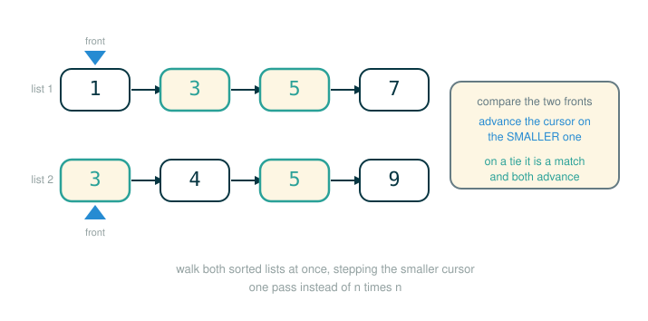

2.9 Ordered and Tree-Structured Sets
A set is the same idea no matter how you store it: a collection with no repeats, where the only questions that matter are "is this value in here?" and "give me a new set with this value added." But the way you store the elements decides how fast those questions can be answered. This lesson is about three storage choices and the speed each one buys you.
By the end you will be able to do four things. First, search an ordered linked list and explain why it can stop before reaching the end. Second, intersect two ordered linked lists by walking both at once instead of comparing every pair. Third, store a set as a binary search tree and search it by following one branch at each step. Fourth, explain why a tree is fast only when it is balanced, and what goes wrong when it is not.
The thread running through all of it: structure is leverage. Keeping elements in order, or arranging them in a tree, lets you skip work that an unstructured collection would force you to do.
A Sorted Bookshelf
Picture two bookshelves. On the first, books are shoved in any order. To find the book titled M, you have no choice but to read spines one by one until you either find it or run out of shelf. On the second shelf, the books are alphabetized. Now if you are scanning for M and you reach a book titled P, you can stop immediately. Everything past P is later in the alphabet, so M cannot be hiding there.
That single change, keeping things in order, is the whole idea behind an ordered set. You do not always finish faster, but you often do, because reaching a value bigger than your target proves the target is absent.
A tree pushes the idea further. Instead of a single line of books, imagine a librarian who, at every step, can send you to exactly one half of the remaining collection. One question, half the books gone. Ask it again, half of what is left gone. That is the binary search tree, and it is why a balanced tree can find a value among a million elements in about twenty comparisons.
Ordered Linked-List Sets
We keep the same linked-list representation as before, but we add one rule: the values appear from smallest to largest. With numbers, "smaller" and "larger" come for free from the < and > operators, so this representation works for any set of numbers.
The payoff lands in membership testing. When the list is ordered, you no longer have to scan the whole thing. The moment you reach an element larger than the value you are looking for, you know the value is absent, because everything after that point is even larger.
Here is the official membership test for an ordered set. Notice the new first condition: it stops not only at the empty list but also as soon as s.first overshoots v.
def set_contains(s, v):
if empty(s) or s.first > v:
return False
elif s.first == v:
return True
else:
return set_contains(s.rest, v)Read the stopping condition one token at a time. This is the line that makes ordering pay off.
if empty(s) or s.first > v:
├─ if ............ begins a conditional test
├─ empty ......... True when the list has run out of elements
├─ ( ............. begins the argument to empty
├─ s ............. the set being tested
├─ ) ............. ends the argument
├─ or ............ the test is True if either side is True
├─ s.first ....... the smallest value still in the list
├─ > ............. greater-than comparison
├─ v ............. the value we are searching for
├─ : ............. ends the header; the indented block runs when the test is True
└─ when the test is True, the function returns FalseThe other two branches are the ordinary ones: if the front element equals v, the value is present; otherwise recurse on the rest. Here is the official transcript that exercises it:
>>> u = Link(1, Link(4, Link(5)))
>>> set_contains(u, 0)
False
>>> set_contains(u, 4)
TrueFor set_contains(u, 0), the very first element is 1, which is already larger than 0, so the search stops on the first comparison and returns False. For set_contains(u, 4), the search walks 1, then 4, and stops with True.
A warm-up you can run
The official function above depends on an empty helper and a Link class defined in earlier sections. Here is a small self-contained version you can run and read end to end. It uses s is Link.empty directly in place of the empty(s) helper, but the logic is identical.
# (1)
class Link:
empty = ()
def __init__(self, first, rest=empty):
assert rest is Link.empty or isinstance(rest, Link)
self.first = first
self.rest = rest
def __repr__(self):
if self.rest is Link.empty:
rest = ''
else:
rest = ', ' + repr(self.rest)
return 'Link({0}{1})'.format(self.first, rest)
def set_contains(s, v):
if s is Link.empty or s.first > v:
return False
elif s.first == v:
return True
else:
return set_contains(s.rest, v)
u = Link(1, Link(4, Link(5)))
print(set_contains(u, 0))
print(set_contains(u, 4))
Expected output:
False
TrueA bridge you can verify by hand
Trace set_contains on a slightly bigger ordered list, searching for a value that is present and one that is not.
# (2)
ordered = Link(1, Link(3, Link(5, Link(7))))
print(set_contains(ordered, 5))
print(set_contains(ordered, 4))
Expected output:
True
FalseFor set_contains(ordered, 4), walk it by hand. Compare with 1: not bigger than 4, not equal, recurse. Compare with 3: same, recurse. Compare with 5: now 5 > 4 is True, so return False. The search never looks at 7 at all. The values actually examined are:
1, 3, 5That early stop at 5 is the entire advantage of ordering.
How much does ordering save?
In the worst case, ordering saves nothing. If the value you want is the largest element, you still walk the whole list before finding it, exactly as in the unordered version. But across many searches for values of different sizes, you will often stop near the front and sometimes near the back, averaging about half the list. So the average work is roughly:
That is still growth, because constant factors do not change the category. Ordering buys a real speedup in practice, not a change in order of growth.
Intersecting Ordered Sets
Membership saw a modest gain. Intersection sees a dramatic one. In the unordered representation, intersection cost steps, because for every element of set1 you scanned all of set2. Ordering lets us do something far cleverer: walk both lists at the same time.
The figure below shows the two pointers advancing through both ordered lists in a single simultaneous walk.

Track the front element of each list, call them e1 and e2. Three things can happen. If e1 and e2 are equal, that value belongs in the intersection, and you advance both lists. If e1 is smaller than e2, then e1 is also smaller than every remaining element of set2 (because set2 is sorted), so e1 cannot possibly appear in set2; discard it and advance set1. If e2 is smaller than e1, the mirror image holds, so advance set2. Either way, every step throws away at least one element.
Here is the official function.
def intersect_set(set1, set2):
if empty(set1) or empty(set2):
return Link.empty
else:
e1, e2 = set1.first, set2.first
if e1 == e2:
return Link(e1, intersect_set(set1.rest, set2.rest))
elif e1 < e2:
return intersect_set(set1.rest, set2)
elif e2 < e1:
return intersect_set(set1, set2.rest)Read the three-way comparison as the heart of the algorithm. Each branch decides which list to advance.
if e1 == e2:
├─ if ............ begins a conditional test
├─ e1 ............ front of set1
├─ == ............ equality comparison
├─ e2 ............ front of set2
├─ : ............. ends the header; the indented block runs when the test is True
└─ when True, keep e1 in the result and advance BOTH listselif e1 < e2:
├─ elif .......... checked only when e1 == e2 was False
├─ e1 ............ front of set1
├─ < ............. less-than comparison
├─ e2 ............ front of set2
├─ : ............. ends the header; the indented block runs when the test is True
└─ when True, e1 is in neither tail to come, so drop e1 and advance set1The official transcript intersects a set with its own rest:
>>> intersect_set(s, s.rest)
Link(4, Link(5))A bridge you can verify by hand
Here s and the official empty helper come from earlier sections, so the transcript above is not self-contained. This runnable version reuses the Link class and set_contains from block (1) and defines intersect_set with s is Link.empty in place of empty(s).
# (3)
def intersect_set(set1, set2):
if set1 is Link.empty or set2 is Link.empty:
return Link.empty
else:
e1, e2 = set1.first, set2.first
if e1 == e2:
return Link(e1, intersect_set(set1.rest, set2.rest))
elif e1 < e2:
return intersect_set(set1.rest, set2)
elif e2 < e1:
return intersect_set(set1, set2.rest)
a = Link(1, Link(2, Link(3, Link(5))))
b = Link(2, Link(4, Link(5, Link(6))))
print(intersect_set(a, b))
Expected output:
Link(2, Link(5))Trace it. Fronts are 1 and 2: since 1 < 2, drop 1, advance a. Fronts 2 and 2: equal, keep 2, advance both. Fronts 3 and 4: since 3 < 4, drop 3, advance a. Fronts 5 and 4: since 4 < 5, drop 4, advance b. Fronts 5 and 5: equal, keep 5, advance both. Now a is empty, so return the empty link. The kept values, 2 and 5, form the result.
How much does this save?
Each step shrinks at least one of the two lists by one element. So the total number of steps is at most the sum of the two sizes, not the product. That is:
instead of:
The difference is enormous at scale. Intersecting two sets of size 100 takes around 200 steps with the ordered method, versus around 10,000 with the unordered one.
Adjunction and union for ordered sets can also be done in linear time, by the same walk-both-lists idea. Those are left as exercises in the original text.
Tree-Structured Sets
An ordered list can stop early, but it still moves one step at a time, so its membership test stays . A tree changes the geometry. Arrange the set as a tree with exactly two branches, and follow a rule:
left branch: every value is SMALLER than the entry
entry: one element of the set, at the root
right branch: every value is LARGER than the entryThis is a binary search tree. The same set can be drawn as a tree in several different shapes, but the rule above always holds: everything left of a node is smaller than it, everything right is larger. The original text shows the single set {1, 3, 5, 7, 9, 11} drawn as several different trees, each rooted at a different element. Here are three of them, all holding exactly that set.
Rooted at 7, balanced:
7
/ \
3 9
/ \ / \
1 5 * 11Here the * marks an empty branch: 9 has a right child 11 but no left child.
Rooted at 5:
5
/ \
3 9
/ / \
1 7 11Rooted at 9:
9
/ \
3 11
/ \
1 7
/
5These are three different shapes of one set, not three different sets. Check any node in any of them and the invariant holds: in the tree rooted at 9, for instance, everything to the left of 9 ({1, 3, 5, 7}) is smaller and the lone value to its right (11) is larger; under 3, the value 1 sits left and 7 sits right; and 7, the right child of 3, keeps its smaller child 5 on the left. Because the same set admits many valid shapes, the cost of searching depends on which shape you have, a point the section on balance returns to.
Searching is where the rule pays off. To check whether v is in the set, compare it with entry. If v is smaller, you need only search the left branch; if larger, only the right. If the tree is balanced, each branch is about half the size of the whole, so a single comparison cuts the problem in half. Reducing a problem of size to one of size:
at every step means the work grows as:
For large sets that is a major speedup over both list representations.
Here is the official membership test. The empty tree is represented by None, and the branches are reached through s.left and s.right.
def set_contains(s, v):
if s is None:
return False
elif s.entry == v:
return True
elif s.entry < v:
return set_contains(s.right, v)
elif s.entry > v:
return set_contains(s.left, v)Read the branch that chooses a direction. This is the comparison that discards half the tree.
elif s.entry < v:
├─ elif .......... checked after the empty and equal cases
├─ s.entry ....... the value stored at this node
├─ < ............. less-than comparison
├─ v ............. the value we are searching for
├─ : ............. ends the header; the indented block runs when the test is True
└─ when True, v can only be larger, so search the RIGHT branchA warm-up you can run
A binary search tree needs a tree with exactly two branches, so these functions use a Tree class with entry, left, and right (empty branches are None) — a two-branch variant of the trees you met earlier. Here is a self-contained version of that class so the searches run, followed by the official set_contains.
# (4)
class Tree:
def __init__(self, entry, left=None, right=None):
self.entry = entry
self.left = left
self.right = right
def __repr__(self):
if self.left is None and self.right is None:
return 'Tree({0})'.format(self.entry)
return 'Tree({0}, {1}, {2})'.format(self.entry, self.left, self.right)
def set_contains(s, v):
if s is None:
return False
elif s.entry == v:
return True
elif s.entry < v:
return set_contains(s.right, v)
elif s.entry > v:
return set_contains(s.left, v)
balanced = Tree(4, Tree(2, Tree(1), Tree(3)), Tree(6, Tree(5), Tree(7)))
print(set_contains(balanced, 7))
print(set_contains(balanced, 8))
Expected output:
True
FalseA bridge you can verify by hand
The tree balanced above stores {1, 2, 3, 4, 5, 6, 7} in the shape:
4
/ \
2 6
/ \ / \
1 3 5 7To search for 7: compare with 4, since 7 > 4 go right; compare with 6, since 7 > 6 go right; compare with 7, equal, return True. Three comparisons. To search for 8: compare with 4 go right, compare with 6 go right, compare with 7 go right, but the right branch of 7 is None, so return False. The path examined for both searches is short because each comparison skips an entire side of the tree.
Adding to a tree-structured set
To adjoin a value, follow the same search path, and when you reach an empty branch (a None), build a new one-node tree there. Compare v with entry to decide whether it belongs left or right, recurse into that branch, and reassemble the node with the rebuilt branch and the untouched other branch. If v equals the entry, it is already present, so return the node unchanged.
Here is the official function.
def adjoin_set(s, v):
if s is None:
return Tree(v)
elif s.entry == v:
return s
elif s.entry < v:
return Tree(s.entry, s.left, adjoin_set(s.right, v))
elif s.entry > v:
return Tree(s.entry, adjoin_set(s.left, v), s.right)Read the case where the new value is larger than the current entry.
elif s.entry < v:
├─ elif .......... checked after the empty and equal cases
├─ s.entry ....... the value at this node
├─ < ............. less-than comparison
├─ v ............. the value being added
├─ : ............. ends the header; the indented block runs when the test is True
└─ when True, rebuild this node, recursing adjoin_set into the RIGHT branchThe official transcript builds a tree by adjoining three values into an empty set:
>>> adjoin_set(adjoin_set(adjoin_set(None, 2), 3), 1)
Tree(2, Tree(1), Tree(3))The innermost call adjoins 2 to None, producing Tree(2). The next adjoins 3: since 3 > 2, it goes right, giving Tree(2, None, Tree(3)). The outermost adjoins 1: since 1 < 2, it goes left, giving Tree(2, Tree(1), Tree(3)). Because both children of 2 are now leaves, the repr collapses them to Tree(1) and Tree(3).
A bridge you can verify by hand
This runnable version reuses the Tree class from block (4) and adds the official adjoin_set.
# (5)
def adjoin_set(s, v):
if s is None:
return Tree(v)
elif s.entry == v:
return s
elif s.entry < v:
return Tree(s.entry, s.left, adjoin_set(s.right, v))
elif s.entry > v:
return Tree(s.entry, adjoin_set(s.left, v), s.right)
print(adjoin_set(adjoin_set(adjoin_set(None, 2), 3), 1))
small = Tree(2, Tree(1), Tree(3))
print(adjoin_set(small, 4))
print(adjoin_set(small, 3))
Expected output:
Tree(2, Tree(1), Tree(3))
Tree(2, Tree(1), Tree(3, None, Tree(4)))
Tree(2, Tree(1), Tree(3))Adding 4 to small walks right at 2 (since 4 > 2), right at 3 (since 4 > 3), reaches None, and plants Tree(4) there. The result Tree(3, None, Tree(4)) has an empty left branch, shown as None, because 3 gained a larger child but no smaller one. Adding 3 finds 3 already present at that node and returns small unchanged.
Why Balance Matters
The promise of logarithmic search rests entirely on the tree being balanced, meaning the left and right branches of every node hold roughly equal numbers of elements. But nothing in adjoin_set enforces that. Where a new value lands depends only on how it compares to what is already there.
If you adjoin values in "random" order, the tree tends to come out reasonably balanced on average. But there is no guarantee. The worst case is adjoining values already in sorted order. Start from the empty set and adjoin 1 through 7 in sequence, and every value is larger than the one before, so every value goes right. The left branches are all empty:
1
\
2
\
3
\
4
\
5This is a tree only in name. It is shaped like a linked list, and searching it is back to . A balanced tree of elements has height close to:
so its membership grows like , while this degenerate tree grows like . The representation did not change; the shape did, and shape is what controls the cost.
One fix is to define an operation that rebuilds an arbitrary tree into a balanced one holding the same elements, and run it every few adjoins to keep the set in balance. Intersection and union on tree-structured sets can be done in linear time by converting to ordered lists and back. Both are left as exercises in the original text.
Python's Set Implementation
Python's built-in set type uses none of these representations internally. Instead it relies on a technique called hashing, which gives constant-time membership tests and additions. Hashing is a topic for a later course; the practical takeaway is that built-in set operations are usually very fast.
Hashing imposes one requirement: a set cannot contain mutable values such as lists, dictionaries, or other sets, because those could change after being stored. To allow nested sets, Python provides a built-in immutable frozenset class. It shares the non-mutating methods of set but omits anything that would change it, so a frozenset is stable enough to live inside another set.
# (6)
a = frozenset([1, 2])
b = frozenset([2, 3])
collection = {a, b}
print(a in collection)
print(frozenset([3, 4]) in collection)
Expected output:
True
FalseA normal set is mutable, so it cannot be an element of another set; trying it raises a TypeError. A frozenset is immutable, so it can.
⚠Common Beginner Traps
Trap 1: Thinking a sorted linked list gives instant lookup. It can stop early when it passes the target, but it still moves through the list one link at a time. Its growth is still .
Trap 2: Thinking every tree gives logarithmic time. Only a reasonably balanced binary search tree does. A tree built by adjoining sorted values is shaped like a list and is .
Trap 3: Forgetting the binary search invariant. Every value in a node's left branch must be smaller than its entry, and every value in the right branch must be larger. If that rule is broken, set_contains can walk down the wrong side and miss a value that is present.
Trap 4: Mixing up the empty value across representations. The official ordered-list functions treat the empty list as Link.empty (the helper empty(s) checks for it), while the official tree functions treat the empty tree as None. Test for the right sentinel for the structure you are using: checking the wrong one lets a None branch slip past the base case, and the next line raises AttributeError: 'NoneType' object has no attribute 'entry'.
Trap 5: Putting mutable sets inside sets. A plain set cannot be an element of another set; attempting it raises TypeError: unhashable type: 'set'. Use frozenset when a set must itself be a member.
✓Check Your Understanding
- Why can ordered linked-list membership stop before reaching the end of the list?
- In ordered intersection, why is it safe to discard
e1whene1 < e2? - Search the tree
Tree(8, Tree(4, Tree(2), Tree(6)), Tree(10))for the value6usingset_contains. Which entries does it compare against, in order, and what does it return? - Why does balance affect tree-search efficiency, and what sequence of adjoins produces the worst case?
- Why can
frozenset([1, 2])be placed inside a set when a plainsetcannot?
Show the answers
- Because the values are sorted, reaching an element larger than the target proves the target is absent: everything after that point is even larger. So the search returns
Falseas soon ass.first > v. - Because
set2is sorted,e2is the smallest of its remaining elements. Ife1 < e2, thene1is smaller than everything left inset2, so it cannot appear there and cannot be in the intersection. Discarding it loses no candidate. - Compare with
8: since6 < 8, go left. Compare with4: since6 > 4, go right. Compare with6: equal, returnTrue. The entries compared, in order, are8,4,6, and the result isTrue. - A balanced tree cuts the remaining elements roughly in half at each comparison, giving search. An unbalanced tree may remove only one element per step. Adjoining values in sorted order, such as
1through7, sends every value to the right, producing a list-shaped tree with search. - A
frozensetis immutable, so its contents and hash value never change, which is what hashing-based sets require of their elements. A plainsetis mutable, so Python forbids it as a set element and raises aTypeError.
§Summary
The representation of a set decides the cost of its operations. An ordered linked list lets membership stop early once it passes the target, which is a practical speedup but still , and it lets intersection walk both lists at once for a real jump from down to . A binary search tree arranges elements so that one comparison discards an entire branch, giving membership and adjoin when the tree is balanced. But balance is not automatic: adjoining sorted values produces a list-shaped tree that falls back to , so a real implementation must rebalance. Python's own set uses none of these and instead relies on hashing for near-constant-time operations, at the cost of requiring immutable elements, which is why frozenset exists for nested sets.
This closes Chapter 2's main story about data. We began with native values, built compound values, hid representations behind abstraction barriers, added mutation and identity, and then used objects and recursive structures to organize increasingly rich information. Chapter 3 changes the subject: a program itself can be represented as data, then read and evaluated by another program called an interpreter.
▶Step-Through Checkpoint
This capstone block collects the lesson's tree machinery and runs one search of the balanced tree. Laying the search out as an environment diagram shows the ordering paying off: the seven Tree objects sit nested on the heap by entry, left, and right, and each set_contains frame compares v against one entry and then binds the next s to a single child, so the recursion descends just one branch per level rather than visiting every node. Before you step through it, write down three predictions: how many Tree.__init__ frames open before the search starts, what v holds in each set_contains frame as s changes, and whether adjoin_set ever opens a frame.
# (7)
class Tree:
def __init__(self, entry, left=None, right=None):
self.entry = entry
self.left = left
self.right = right
def __repr__(self):
if self.left is None and self.right is None:
return 'Tree({0})'.format(self.entry)
return 'Tree({0}, {1}, {2})'.format(self.entry, self.left, self.right)
def set_contains(s, v):
if s is None:
return False
elif s.entry == v:
return True
elif s.entry < v:
return set_contains(s.right, v)
elif s.entry > v:
return set_contains(s.left, v)
def adjoin_set(s, v):
if s is None:
return Tree(v)
elif s.entry == v:
return s
elif s.entry < v:
return Tree(s.entry, s.left, adjoin_set(s.right, v))
elif s.entry > v:
return Tree(s.entry, adjoin_set(s.left, v), s.right)
balanced = Tree(4, Tree(2, Tree(1), Tree(3)), Tree(6, Tree(5), Tree(7)))
found = set_contains(balanced, 7)
Check each prediction as you step. Seven __init__ frames build the tree, but only three set_contains frames search it, one per level, s following the right branch through 4, 6, and 7 while v stays 7 in every frame. The chain collapses, binding found to True; adjoin_set never runs, because a definition alone opens no frame.